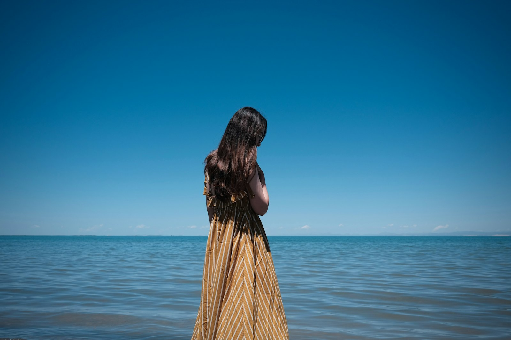
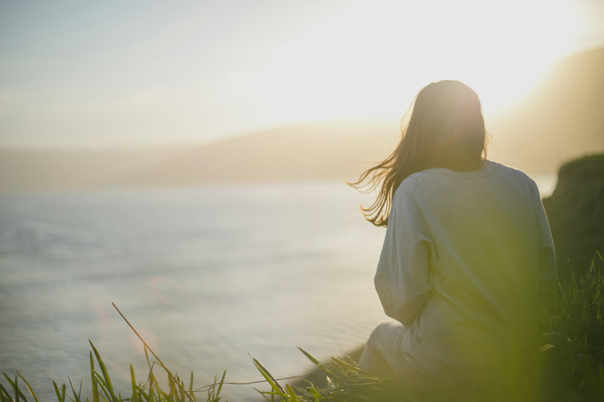

Kellele see on
Sulle, kui
- Sa tunned, et oled ammu viimaseks jäänud: Sul on kõigile aega, endale mitte.
- Sa tahad tunda oma keha uuesti kodus.
- Sa soovid lähedasi suhteid, kus Sa oled päriselt nähtud.
- Sa oled valmis iga nädal enda jaoks kohale tulema.
Mitte Sulle, kui
- Sa otsid kiiret lahendust ilma enda sisse vaatamata.
- Sa ei ole valmis grupiga koos olema.
- Sa vajad praegu eelkõige terapeudi või kriisiabi. Siis aitame Sul õige koha leida.

Kas see kõlab tuttavalt?
Sa oled väsinud ja Sa ei tunne enam, mida Sa päriselt tahad.
Sa hoolitsed kõigi eest. Enda jaoks jääb viimane tund ööst.
Sinu keha on pinges ja Sa ei suuda lõdvestuda.
Suhetes Sa kas hoiad end tagasi või annad liiga palju.
Pööre: mis muutus Kaidi jaoks

[KAIDI LUGU SIIA: kus ta oli, mis muutus, mida ta valis. Ainult päris lugu, ainult see, mida ta ise tahab jagada.]
Kaidi on aastaid saatnud naisi tagasi iseenda juurde. Ta teab, et muutus tuleb õrnalt, igapäevaste väikeste valikutega, mitte sunniga. [KINNITA: täpsusta]
Hendrik on tema kõrval ja hoiab ruumi, kuhu naised saavad tulla. [HENDRIKU ROLL SIIA: ühe lausega]
Kolm kodu: Keha, Suhted, Vaim
Tule oma kehasse tagasi
Keha on Sinu esimene kodu. Alustame sealt.
- Õrn liikumine ja jõud, mis sobib Sinu päevaga
- Toit ja uni, mis toetavad Sind
- Hingamine ja lõdvestus
Ole nähtud ja näe teist
Suhted Sinuga ja teistega algavad ausast kuulamisest.
- Piirid, mis on selged ja soojad
- Intiimsuse harjutused (INT5) [KINNITA]
- Kuulamine ja rääkimine kohtumistes
Vaikus ja suund
Siin leiad rahu ja selguse, mida Sa edasi kaasa võtad.
- Meditatsioonid ja hommikune ritual
- Enda tunnete ja vajaduste kuulamine
- Su oma suund, väike samm korraga
Proof: mis juhtub, kui inimene alustab
Mida Sa saad
Iganädalane kohtumine Kaidi ja Hendrikuga, kolm kodu
Keha, suhete ja vaimu algpunkt ja plaan
Salvestised, mida Sa saad kuulata, millal Sa vajad
Igapäevane soe tugi
Kus Sa oled, mida muuta
Boonused, kui Sa otsustad nüüd
Näiteks hommikune ritual (heli)
Näiteks naiste õhtu, live
Näiteks kutse retriidile [KINNITA]
Meie lubadus Sulle
[GARANTII SIIA, KINNITA] Näiteks: tule kaks esimest nädalat. Kui tunned, et see ei ole Sinu tee, saad raha tagasi, ilma küsimusteta.
Risk on meie poolel. Sinu osa on tulla kohale ja olla enda vastu aus.
Kohti on vähe
Grupp jääb väikseks, et iga naine saab olla nähtud. Kohti on [KINNITA: arv].
Järgmine grupp algab: [ALGUSKUUPÄEV SIIA]. Kui kohad saavad täis, on järgmine võimalus [KINNITA].
Sinu panus
Ühe maksena. Või 2-3 osamaksena: [MAKSEPLAAN SIIA] [KINNITA]
Broneeri 20-min videokõneKõigepealt räägime 20 minutit. Sa ei pea midagi ette maksma.
Küsimused, mis Sul võivad olla
Mul ei ole aega.
Nädalas on üks kohtumine ja lühikesed igapäevased hetked. Sinu päev saab rahulikum. [KINNITA: tunnid nädalas]
Mul ei ole praegu raha.
Sellepärast on 20-min kõne: vaatame koos, kas ja kuidas see Sulle sobib. Osamaksed on olemas. [KINNITA]
Ma ei ole grupis olnud ja mul on kartus.
See on loomulik. Grupp on väike ja Sa jagad ainult seda, mida tahad.
Kas see sobib ka algajale?
Jah. Alustad sealt, kus Sa oled.
Mis juhtub pärast kõnet?
Sa kuuled, kuidas programm käib. Kui see tundub Sinu oma, otsustame koos. Kui ei, saad vähemalt selgema pildi.
Sa tead juba, mis Sa tunned
Sa võid jätkata nagu seni. Aga Sa oled siin, sest midagi Sinus soovib tähelepanu.
Broneeri 20 minutit. Me kuuleme Sind.
Kaidi ja Hendrik